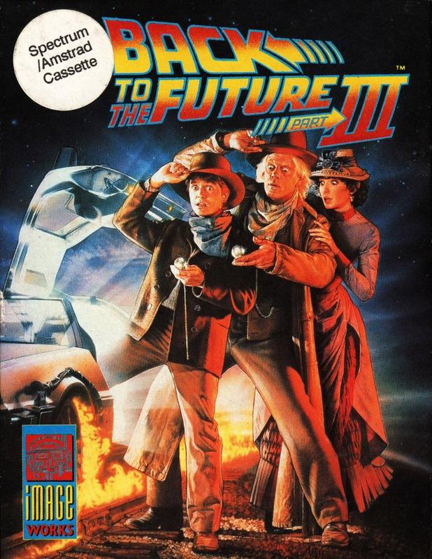
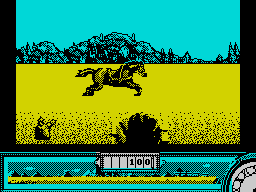

Back to the Future Part III


{kind=link}

| Publisher: | Imageworks |
| Price: | £10.99 / £14.99 |
| Year: | 1991 |
| Source: | CRASH, Issue 86 |

All set for a ring-dingin’, rootin’, tootin’ conclusion to Back To The Future? This is part three of the saga and it’s a pretty hot cookie!
Set way back in the Wild West (1885, to be exact), the action starts with Doc Brown on a horse. He has to chase after the runaway carriage that holds Clara, the woman he is about to tall in love with. You help the Doc control the horse and keep the enemies at bay. Jumping cliffs, ducking from barrels and collecting bonus points keeps you busy.
The second section of level one is a vertically scrolling shoot-em-up, bullets flying everywhere. Survive all this and you come to...

section of Back To The Future
The Shooting Gallery: more bullets! You’ve now changed characters to become Marty, and he ain’t yella! Armed with a shiny new gun, he has to shoot all the pop-up targets such as ducks, geese and cowboys. A careful trigger finger is needed, however, as the odd granny (not that all grannies are odd!) pops up. Shooting her reduces your score. Now, off to the streets.
Being a bit of a frisbee king back (or is it forward?) in 1985, Marty takes on the local baddie (Bufford) and his cronies, armed with nothing more than a few tin pie plates! He has to score a direct hit on all the cowboys and then do away with big bad Bufford himself.
Now get back to the future! The DeLorean has been strapped to the front of a steam train which has to reach the magic 88 mph before it can travel through time. To reach this sort of speed the train has to do some impressive puffing (missus). Collecting Presto blocks to give it that extra boost is your task.
Back To The Future Part III came as a big surprise to me. The last two games have been pretty shoddy, to say the least, but part three is a real joy to play.
Graphics are excellent. Large animated sprites and colourful backdrops are used in most of the game, with only the vertically scrolling shoot-em-up levels letting the side down.
Gameplay is totally addictive. Once you’ve started playing you just won’t be able to put the game down. To complement all this are some toe-tapping tunes. Wild West classics like ’Ghost Riders In The Sky’ and ’The Good, The Bad, And The Ugly’ (known as ’Nick, Richard and Mark’ in the CRASH office) play through the levels. Imageworks are on to a real winner here, rounding off the trilogy with such a wonderful action-packed and varied game (Great scott, Marty, it’s a CRASH Smash)!!
NICK — 93%
CRITICISM
Back To The Future Part III is happily a great improvement over its predecessor: it plays well, looks good and sounds good! The game’s four action-packed levels follow the film plot closely. The sprites are really great, moving as fast as the smooth scrolling. Level three is especially speedy, Marty chucking pie plates all over the place! I loved the film and highly recommend the game. It’s a pity it’s taken until the last film to get a decent Back To The Future game. So, it’s my last chance to shout ’Marty, you’ve got to come with me back to the future!’ at an annoyingly loud volume (sniffle)!
MARK — 93%
RATING
An excellent game, following the film closely — very addictive!
| Presentation: | 91% |
| Graphics: | 92% |
| Sound: | 90% |
| Playability: | 91% |
| Addictivity: | 93% |
| Overall: | 93% |